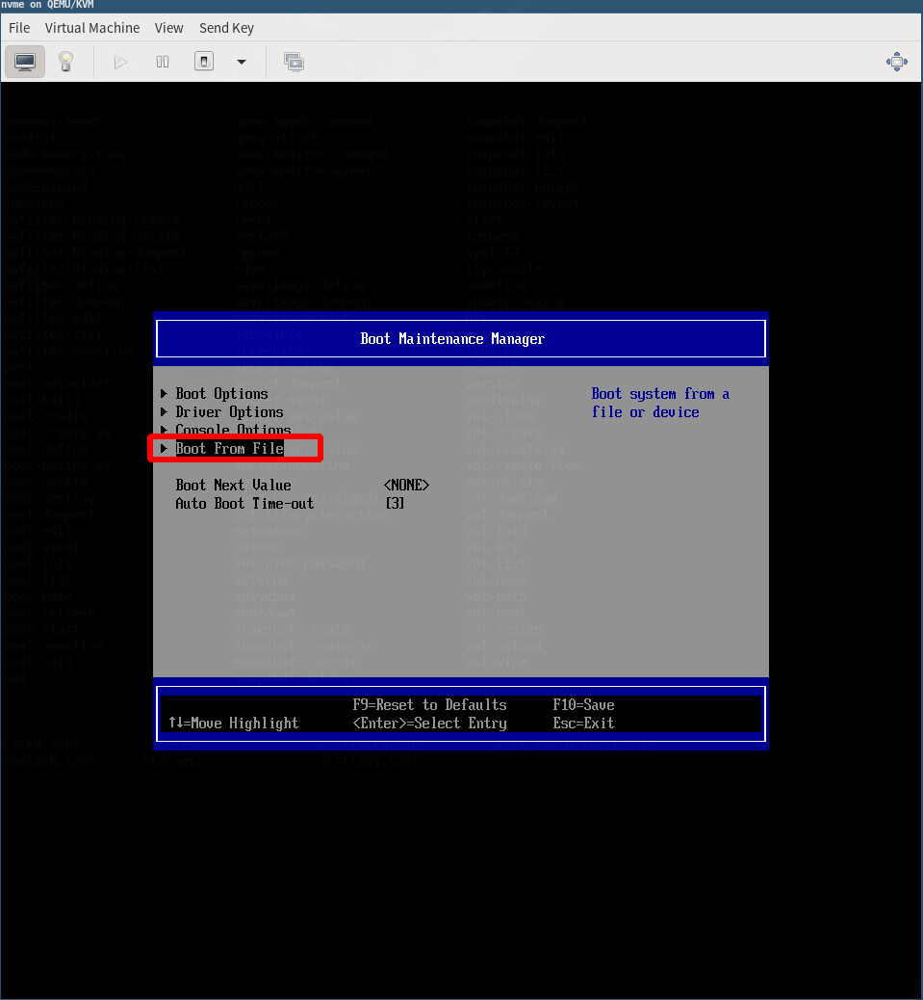

KVM
Table of Contents
1. 安装过程
- 安装命令
sudo apt install qemu qemu-kvm qemu-utils libvirt-clients libvirt-daemon-system bridge-utils libguestfs-tools virtinst libosinfo-bin
- 添加用户权限
添加用户到 libvirt libvirt-qemu 组中
sudo usermod -a -G libvirt username sudo usermod -a -G libvirt-qemu username
- 添加默认nat网络
配置文件位置: /etc/libvirt/qemu/networks/default.xml
sudo virsh net-start default sudo virsh net-autostart default
2. vrish操作
3. 硬件直通
3.1. PCI直通
3.1.1. 前期准备
在bios中开启 VT-d或者AMD-Vi, 并且开启内核的 iommu.
- VT-d
- 英特尔支持直接 I/O 访问的 VT虚拟化技术
- AMD-Vi
- 实现虚拟机直接设备访问，绕过了超级监管VMM，提高应用的性能和虚拟机的隔离性，从而提高完整性和安全性
- (no term)
IOMMU 添加内核启动参数, 以开启iommu, 通过修改
GRUB_CMDLINE_LINUX_DEFAULT变量, 来添加参数, 格式为name=value.intel cpu 添加:
intel_iommu=onamd cpu 添加:amd_iommu=on$ sudo vim /etc/default/grub
# If you change this file, run 'update-grub' afterwards to update # /boot/grub/grub.cfg. # For full documentation of the options in this file, see: # info -f grub -n 'Simple configuration' GRUB_DEFAULT=0 GRUB_TIMEOUT=5 GRUB_DISTRIBUTOR=`lsb_release -i -s 2> /dev/null || echo Debian` GRUB_CMDLINE_LINUX_DEFAULT="quiet amd_iommu=on" GRUB_CMDLINE_LINUX=""
更新guub
$ sudo update-grub
或者
$ sudo grub2-mkconfig -o /boot/grub2/grub.cfg
3.1.2. 直通nvme步骤
- 首先查找设备的pci
$ sudo nvme list-subsys #显示信息中包含了pic号 $ virsh nodedev-list --tree |grep pci #从列表中找到对应的pic, 复制名称 e.g. pci_xxxx_xx_xx_x +- pci_0000_00_00_0 +- pci_0000_00_00_2 +- pci_0000_00_01_0 +- pci_0000_00_01_1 | +- pci_0000_01_00_0 +- pci_0000_00_18_0
- 通过virsh获取设备的xml
$ virsh nodedev-dumpxml pci_0000_01_00_0
<device>
<name>pci_0000_01_00_0</name>
<path>/sys/devices/pci0000:00/0000:00:01.1/0000:01:00.0</path>
<parent>pci_0000_00_01_1</parent>
<driver>
<name>vfio-pci</name>
</driver>
<capability type='pci'>
<domain>0</domain>
<bus>1</bus>
<slot>0</slot>
<function>0</function>
<product id='0x5013' />
<vendor id='0x1987' />
<iommuGroup number='12'>
<address domain='0x0000' bus='0x01' slot='0x00' function='0x0'/>
</iommuGroup>
<numa node='0'/>
</capability>
</device>
- 通过virsh dettach设备
$ virsh nodedev-dettach pci_0000_01_00_0
- 修改虚拟机的xml文件
路径默认位置: /etc/libvirt/qemu/xxxx.xml 在deveices配置块中增加下列内容, 将address替换为上面查到的address
<devices>
......
<hostdev mode='subsystem' type='pci' managed='yes'>
<source>
<address domain='0x0000' bus='0x01' slot='0x00' function='0x0'/>
</source>
</hostdev>
......
</devices>
- 使虚拟机的xml配置生效
$ virsh define --file /etc/libvirt/qemu/xxxx.xml
- 启动虚拟机
3.1.3. nvme 引导(设备中存在系统)
如果nvme中存在系统, 则无需重新安装, 直接引导启动, 通过 virt-manager 设置刚刚添加的 pci作为boot 引导, 或者修改xml配置文件
- uefi
如果需要 uefi 支持, 需要安装 ovmf
$ sudo apt install ovmf # debian or ubuntu
kvm默认是BIOS启动, 如果要修改为UEFI启动, 需要修改xml文件, 添加一行
注意: x86_64: /usr/share/OVMF/OVMF_CODE.fd 或者 /usr/share/OVMF/OVMF_VARS.fd
- 启动虚拟机, 进入boot menu
如何开启boot menu
进入boot menu, 选择 Boot Maintenance Manager

选择 Boot From File

选择nvme设备
选择引导文件
Enter 启动系统
- 修改引导顺序
$ efibootmgr # 列出boot引导顺序列表 $ efibootmgr -0 xxxx,xxxx,xxxx....... # 调整引导顺序